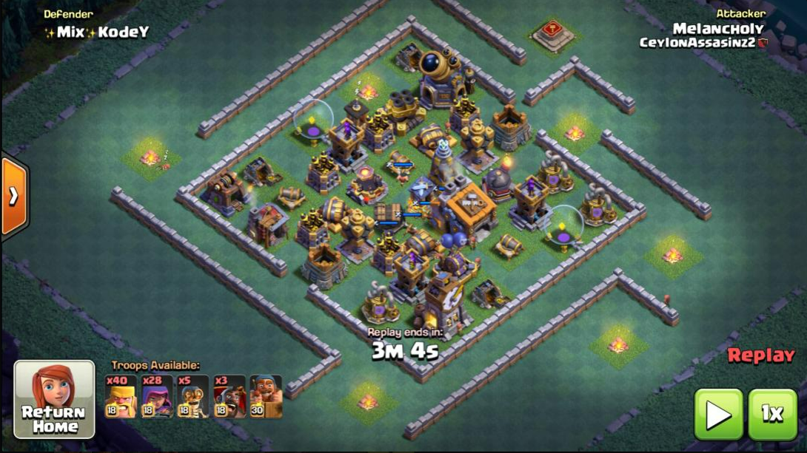
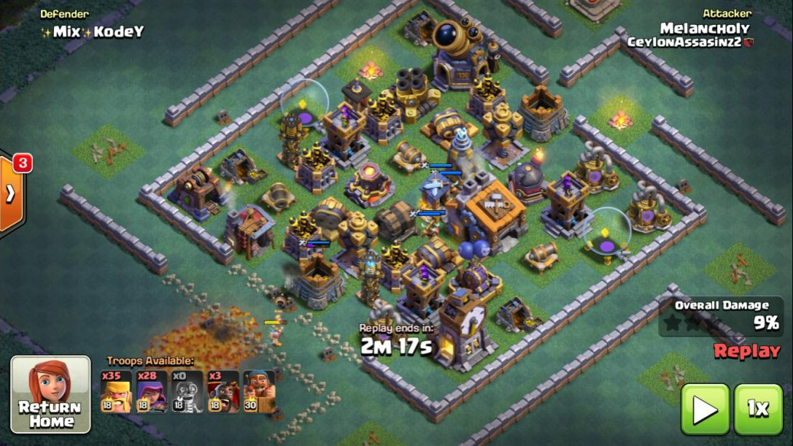
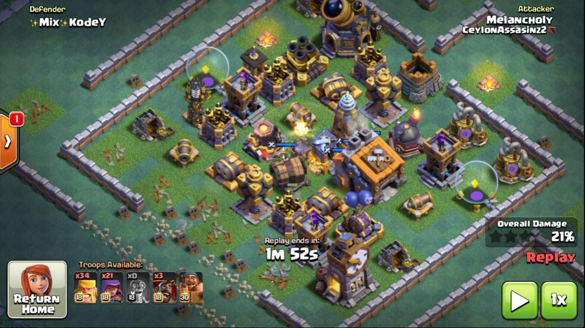
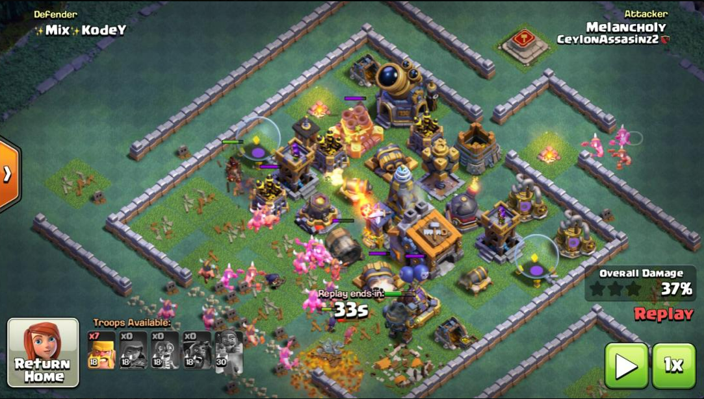
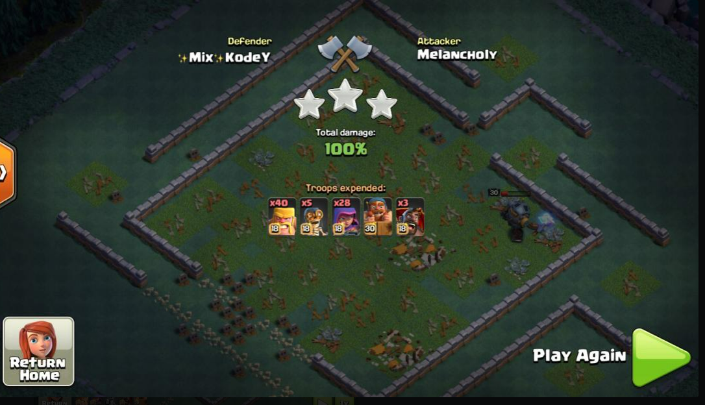

Solution 1: 2barb/2arch/1bomber/1hog | very safe 74+
Note: use a pekka instead of hogs if the roaster is on the side you are attacking.
1)wallbreak; your last bomber can get a big bomb on 4 buildings
2)archers on the outside resource buildings lure gp out
3)have an archer follow the gp troops going back to trigger either 1 or 2 middle mines
4)hogs (or pekka) either distract the roaster or check for mega mines, barbs down the middle



